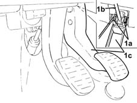
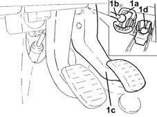
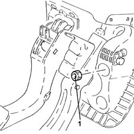
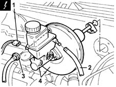
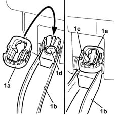

3330D02 brake servo/brake pump assembly - r r
- Path
- Procedures > 33 BRAKING SYSTEM > 3330 HYDRAULIC BRAKING SYSTEM > 3330D brake vacuum system > 3330D02 brake servo/brake pump assembly - r r
- Kind
- repair procedure (removal / refitting; the operation number is the code)
- Applies to
- all engines; all production periods
- Interactive page
- https://sloeber94.github.io/elrnDB-lYpsln/en/#/2429176
Applies to: all engines; all production periods
 Removing
Removing
 Refitting
RefittingProceed with removal 5530B10 battery - r+r .
Proceed with removal 5530B52 Battery DRIP TRAY/SUPPORT - R.R. .
Proceed with removal 5505A13 supplementary junction control unit in engine bay - r r .
Proceed with removal 3340A12 A'B.S. system. - electronic and hydraulic CONTROL UNIT R.R. .
1. Working at the rear of the brake pedal, press the white coloured retaining tabs (1a) which secure the brake servo push rod (1b) to the brake pedal (1c).

Applies to: all engines; all production periods
1. Remove the black coloured retaining device (1a), then release the brake servo push rod (1b) from the brake pedal (1c) and keep the cover (1d) for the brake servo push rod spherical head seat.

Applies to: all engines; all production periods
1. Undo the nuts securing the pedal assembly to the brake servo/brake pump assembly.

Applies to: all engines; all production periods
1. Disconnect the electrical connection from the brake fluid level sensor.
 | Name | Connector |
|---|---|---|
1 | Brake fluid level sensor (switch) |
2. Loosen the band and disconnect the delivery pipe from the reservoir to the master cylinder, reservoir side.
3. Disconnect the brake servo single-acting valve from the brake servo.
4. Remove the brake servo/brake pump unit.

Applies to: all engines; all production periods
Refitting
RemovingRefit the brake servo/brake pump assembly in its seating.
Tighten the nuts securing the pedal assembly to the brake servo/brake pump assembly.
 | Fastening | Component | Ø | Value (daNm) |
|---|---|---|---|---|
- | Nut | PEDALS | M8 | (Brake servo/bodyshell side) 1.8 ÷ 2.6 |
Connect the brake servo one-way valve to the brake servo.
Connect the delivery pipe from thereservoir to the master cylinder, reservoir side and tighten the band.
Connect the electrical connection to the brake fluid level sensor.
1. Fit the new retaining device (1a) onto brake pedal (1b) to secure the retaining clips (1c). Position the cover (1d) for the brake servo push rod spherical head.

Applies to: all engines; all production periods
Lift up the brake pedal and position the brake servo push rod by the retaining device.
Press the brake pedal to engage the brake servo push rod with the retaining device.
Proceed with refitting 3340A12 A'B.S. system. - electronic and hydraulic CONTROL UNIT R.R. .
Proceed with refitting 5505A13 supplementary junction control unit in engine bay - r r .
Proceed with refitting 5530B52 Battery DRIP TRAY/SUPPORT - R.R. .
Proceed with refitting 5530B10 battery - r+r .
Proceed with refitting 0010T64 brake and or clutch fluid check level and top up as necessary .
Proceed with refitting 0010T65 hydraulic brake system bleed air .
Topics linked from this page (7)
- 0010T64 brake and or clutch fluid check level and top up as necessary
- 0010T65 hydraulic brake system bleed air
- 3340A12 A'B.S. system. - electronic and hydraulic CONTROL UNIT R.R.
- 5505A13 supplementary junction control unit in engine bay - r r
- 5530B10 battery - r+r
- 5530B52 Battery DRIP TRAY/SUPPORT - R.R.
- K25 Brake fluid level sensor (switch) ( FRONT )